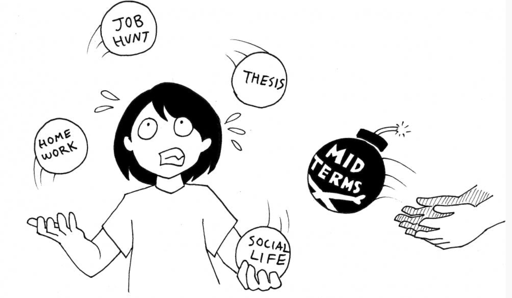
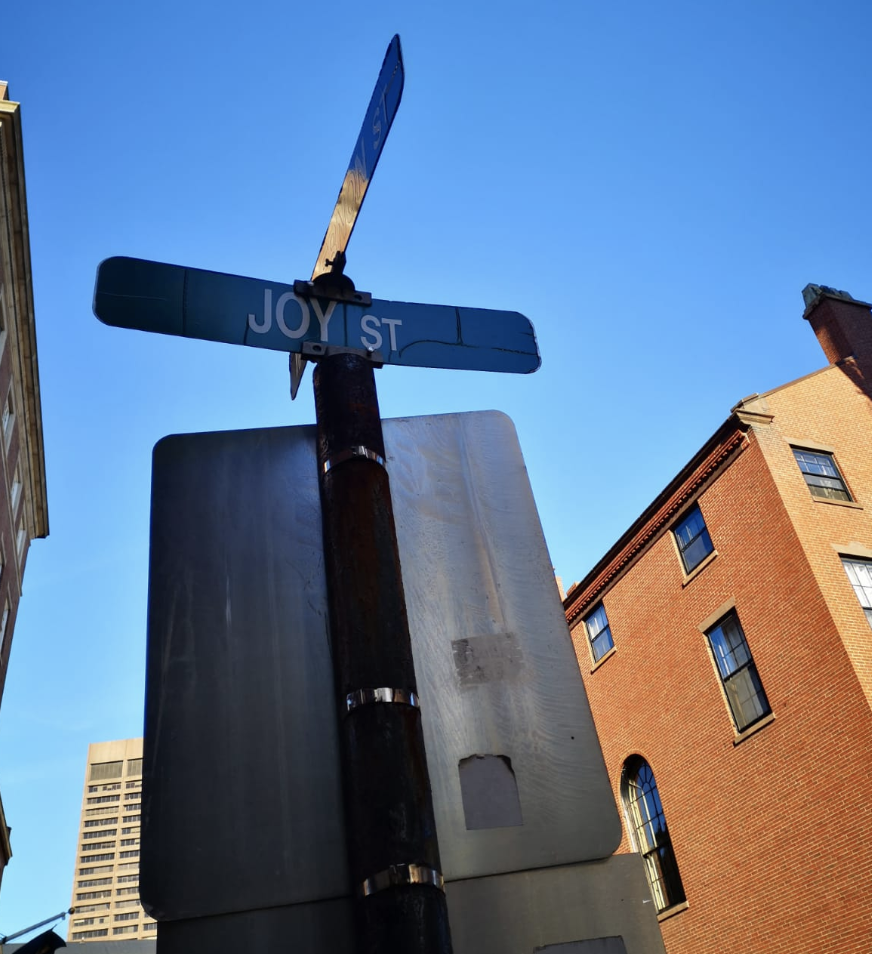

That Journey
Some stories don't have a clear beginning, middle, and end. Life is about not knowing,
having to change, taking the moment and making the best of it, without knowing what's going to happen next. Delicious ambiguity
-Gilda Radner-

I was that 16year old who had everything planned to the "T", as in every step of the way planned out. Let me break it down to you. I have always
love the idea of having knowledge in every area. If you were to ask me what I wanted to be at the age of 10, I would have said "Doctor". Why you ask? Because
I wanted to save lives and end suffering. If you asked me at age 13 what i wanted to be, I would have told you that I wanted to become a footballer because I was the first female
to win Sports Person of the year. If you asked me what I wanted to be at 14, I would have said, I wanted to become an Electrical Engineer.
Why? Well because we had an Electrical Engineer come to our place to install an outdoor light at the side of our house and his ability to meticulously resolve the issue was so intriguing to me as a 14 year old. If you asked asked me at age 18, if I still wanted to become an Engineer, you may have never want to look me in the eyes again. I loved maths, but in life, not everything you love loves you back I suppose. Maths and I had this love hate relationship and in the end, because I had a perception that engineering meant all things maths, I thought "you just can't force love", and you certainly cannot hate 4 years of university?
Why? Well because we had an Electrical Engineer come to our place to install an outdoor light at the side of our house and his ability to meticulously resolve the issue was so intriguing to me as a 14 year old. If you asked asked me at age 18, if I still wanted to become an Engineer, you may have never want to look me in the eyes again. I loved maths, but in life, not everything you love loves you back I suppose. Maths and I had this love hate relationship and in the end, because I had a perception that engineering meant all things maths, I thought "you just can't force love", and you certainly cannot hate 4 years of university?
Perhaps I just needed to understand what an Engineer does and what type of Engineer I wanted to be
New Beginnings

Fast forward to University, I chose to study Sports, Health and Exercise Sciences. Not because I wanted to be a footballer when I was 13 anymore, now I had another plan. As a 16 year old,
it made a lot of sense at the time. I loved sports and loved doing all three sciences at my A level, so I was going to study Sports/Science related degree, so when I got the oppotunity
to study all three fields, I thought my plan was really solidifying. After my Bachelors degree, I will do Masters in physiotherapy, find a job within a football team (Maybe Manchester United),
and with my background in Health, Sports, Nutrition, Physiology, what will I lack? That was not all. So after I joined this football club, oneday someone within the team will trip and pretend to faint (dramtically) and who will be called? "Hilda the Physio"! Once I have taken good care of him, we fall in love.... and whilst he travels for his games, I will accompany him, but also set up my own travel company just because to share my love and passion to travel and explore the earth like others who share the same passion.

Trying to do life with God...
Where to next...?
After University, I had accumlated months of experience in the health sector because I had believed that would give me a better chance to get my foot at the door when I graduated. This would have been a great opportunity if I didn't start having second thoughts about physiotherapy. After all, I was now 20 heading towards 21 and have come to understand that life doesn't "happen like that". Possible, maybe even a miracle to a footballer was to trip and conincidently fall in love with me because I helped him.After a few months had passed, heading towards the end of my 2nd year of University, I had the opportunity to work for one of the Big 4 accounting firms. At the time, I did it because I had a perception office workers lived super "boring" lives and wanted to actually live it out so I can bold say with my chest that "Yes! Working in an office isn't for everyone", but also to have something to do instead of stay home doing nothing. As cliché as it sounds, little did I know that this was going to change the course of my life forever. I can say I am glad I seized this opportunity that poses along the way, for how sad it would be if the road chosen in the end became the opportunity not taken?
Now I am working in a Fintech (Financial Technology) as a Client Success Associate and in an actual office (and it is not boring).

If you told me 7 years ago that I would graduate from uni, not complete my MSc in physiotherapy, not work for a football club, end up in an office and a year and a half later, I will be doing a completing my first project on web development and looking into a career career.
I can say that it has definitely not been essay,however this experience has taught me that some stories don't have a clear beginning, middle, and end however the most important part is to enjoy the journey. Do not like the negatives overide the positives, the stories that will be birth out of this journey. I have been overwhelmed by the level of support and encouragement I have received by everyone around me to push me into fulfilling this dream of mine. The amount of information out there is just never ending.
Below are a few resources I am currently using to navigate through this is ocean of opportunity.
- CodeFistGirls
- FreeCodeCamp
- Le Wagon (free crash courses, also a bootcamp)
- Meetup
- w3schools
- YouTube
- Your BFFL
- Coding Black Females
Also, society for Women of Colour: